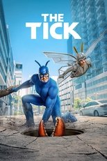

프라임비디오 드라마·시리즈148편 중 인기 60편
순서: 넷플릭스 한국 TOP10 에 든 작품을 먼저(최근에 든 순), 그다음은 TMDB 전 세계 인기도 순입니다 — 넷플릭스 외 서비스는 공식 순위를 공개하지 않습니다. 제공처는 JustWatch 자료(2026-09-24 확인)이며 가입 전 서비스에서 최종 확인하세요.
1 리처 Reacher시리즈 · 2022 · 액션 · 모험제공처 ↗2
리처 Reacher시리즈 · 2022 · 액션 · 모험제공처 ↗2 로 앤 오더: 성범죄전담반 Law & Order: Special Victims Unit시리즈 · 1999 · 범죄 · 드라마 · 넷플릭스에도제공처 ↗3
로 앤 오더: 성범죄전담반 Law & Order: Special Victims Unit시리즈 · 1999 · 범죄 · 드라마 · 넷플릭스에도제공처 ↗3 수퍼내추럴 Supernatural시리즈 · 2005 · 드라마 · 미스터리제공처 ↗4
수퍼내추럴 Supernatural시리즈 · 2005 · 드라마 · 미스터리제공처 ↗4 시카고 파이어 Chicago Fire시리즈 · 2012 · 드라마제공처 ↗5
시카고 파이어 Chicago Fire시리즈 · 2012 · 드라마제공처 ↗5 니글리 Neagley시리즈 · 2026 · 드라마 · 미스터리제공처 ↗6
니글리 Neagley시리즈 · 2026 · 드라마 · 미스터리제공처 ↗6 시카고 PD Chicago P.D.시리즈 · 2014 · 범죄 · 드라마 · 넷플릭스에도제공처 ↗7
시카고 PD Chicago P.D.시리즈 · 2014 · 범죄 · 드라마 · 넷플릭스에도제공처 ↗7 슈츠 Suits시리즈 · 2011 · 드라마 · 넷플릭스에도제공처 ↗8
슈츠 Suits시리즈 · 2011 · 드라마 · 넷플릭스에도제공처 ↗8 더 보이즈 The Boys시리즈 · 2019 · SF/판타지 · 액션제공처 ↗9
더 보이즈 The Boys시리즈 · 2019 · SF/판타지 · 액션제공처 ↗9 시카고 메드 Chicago Med시리즈 · 2015 · 드라마제공처 ↗10
시카고 메드 Chicago Med시리즈 · 2015 · 드라마제공처 ↗10 스타게이트 SG-1 Stargate SG-1시리즈 · 1997 · SF/판타지 · 액션제공처 ↗11
스타게이트 SG-1 Stargate SG-1시리즈 · 1997 · SF/판타지 · 액션제공처 ↗11 영 셸던 Young Sheldon시리즈 · 2017 · 코미디 · 가족 · 넷플릭스에도제공처 ↗12
영 셸던 Young Sheldon시리즈 · 2017 · 코미디 · 가족 · 넷플릭스에도제공처 ↗12 파고 Fargo시리즈 · 2014 · 범죄 · 드라마제공처 ↗13
파고 Fargo시리즈 · 2014 · 범죄 · 드라마제공처 ↗13 반지의 제왕: 힘의 반지 The Lord of the Rings: The Rings of Power시리즈 · 2022 · 액션 · 모험제공처 ↗14
반지의 제왕: 힘의 반지 The Lord of the Rings: The Rings of Power시리즈 · 2022 · 액션 · 모험제공처 ↗14 익스팬스 The Expanse시리즈 · 2015 · 드라마 · 미스터리제공처 ↗15
익스팬스 The Expanse시리즈 · 2015 · 드라마 · 미스터리제공처 ↗15 틴 울프 Teen Wolf시리즈 · 2011 · SF/판타지 · 드라마제공처 ↗16
틴 울프 Teen Wolf시리즈 · 2011 · SF/판타지 · 드라마제공처 ↗16 가십걸 Gossip Girl시리즈 · 2007 · 드라마 · 넷플릭스에도제공처 ↗17
가십걸 Gossip Girl시리즈 · 2007 · 드라마 · 넷플릭스에도제공처 ↗17 보슈 Bosch시리즈 · 2015 · 미스터리 · 드라마제공처 ↗18
보슈 Bosch시리즈 · 2015 · 미스터리 · 드라마제공처 ↗18 오프 캠퍼스 Off Campus시리즈 · 2026 · 드라마제공처 ↗19
오프 캠퍼스 Off Campus시리즈 · 2026 · 드라마제공처 ↗19 Cochinas시리즈 · 2026 · 코미디제공처 ↗20
Cochinas시리즈 · 2026 · 코미디제공처 ↗20 내가 예뻐진 그 여름 The Summer I Turned Pretty시리즈 · 2022 · 드라마제공처 ↗21
내가 예뻐진 그 여름 The Summer I Turned Pretty시리즈 · 2022 · 드라마제공처 ↗21 톰 클랜시의 잭 라이언 Tom Clancy's Jack Ryan시리즈 · 2018 · 액션 · 모험제공처 ↗22
톰 클랜시의 잭 라이언 Tom Clancy's Jack Ryan시리즈 · 2018 · 액션 · 모험제공처 ↗22 El juicio시리즈 · 2026 · 드라마제공처 ↗23
El juicio시리즈 · 2026 · 드라마제공처 ↗23 터미널 리스트: 다크 울프 The Terminal List: Dark Wolf시리즈 · 2025 · 액션 · 모험제공처 ↗24
터미널 리스트: 다크 울프 The Terminal List: Dark Wolf시리즈 · 2025 · 액션 · 모험제공처 ↗24 폴아웃 Fallout시리즈 · 2024 · 액션 · 모험제공처 ↗25
폴아웃 Fallout시리즈 · 2024 · 액션 · 모험제공처 ↗25 터미널 리스트 The Terminal List시리즈 · 2022 · 액션 · 모험제공처 ↗26
터미널 리스트 The Terminal List시리즈 · 2022 · 액션 · 모험제공처 ↗26 시간의 수레바퀴 The Wheel of Time시리즈 · 2021 · SF/판타지 · 드라마제공처 ↗27
시간의 수레바퀴 The Wheel of Time시리즈 · 2021 · SF/판타지 · 드라마제공처 ↗27 스니키 피트 Sneaky Pete시리즈 · 2015 · 드라마 · 범죄 · 넷플릭스에도제공처 ↗28
스니키 피트 Sneaky Pete시리즈 · 2015 · 드라마 · 범죄 · 넷플릭스에도제공처 ↗28 젠 V Gen V시리즈 · 2023 · 액션 · 모험제공처 ↗29
젠 V Gen V시리즈 · 2023 · 액션 · 모험제공처 ↗29 거인 골리앗 Goliath시리즈 · 2016 · 범죄 · 드라마제공처 ↗30
거인 골리앗 Goliath시리즈 · 2016 · 범죄 · 드라마제공처 ↗30 높은 성의 사나이 The Man in the High Castle시리즈 · 2015 · SF/판타지 · 드라마 · 넷플릭스에도제공처 ↗31
높은 성의 사나이 The Man in the High Castle시리즈 · 2015 · SF/판타지 · 드라마 · 넷플릭스에도제공처 ↗31 스카페타 Scarpetta시리즈 · 2026 · 드라마 · 범죄제공처 ↗32
스카페타 Scarpetta시리즈 · 2026 · 드라마 · 범죄제공처 ↗32 보슈: 레거시 Bosch: Legacy시리즈 · 2022 · 범죄 · 드라마제공처 ↗33
보슈: 레거시 Bosch: Legacy시리즈 · 2022 · 범죄 · 드라마제공처 ↗33 스파이더 누아르 Spider-Noir시리즈 · 2026 · 드라마 · 미스터리제공처 ↗34마블러스 미시즈 메이슬 The Marvelous Mrs. Maisel시리즈 · 2017 · 코미디 · 드라마제공처 ↗35
스파이더 누아르 Spider-Noir시리즈 · 2026 · 드라마 · 미스터리제공처 ↗34마블러스 미시즈 메이슬 The Marvelous Mrs. Maisel시리즈 · 2017 · 코미디 · 드라마제공처 ↗35 56일 56 Days시리즈 · 2026 · 드라마 · 범죄제공처 ↗36
56일 56 Days시리즈 · 2026 · 드라마 · 범죄제공처 ↗36 플리백 Fleabag시리즈 · 2016 · 코미디 · 드라마제공처 ↗37스털링 포인트 Sterling Point시리즈 · 2026 · 미스터리 · 드라마제공처 ↗38시타델 Citadel시리즈 · 2023 · 드라마 · 범죄제공처 ↗39멋진 징조들 Good Omens시리즈 · 2019 · 코미디 · 드라마제공처 ↗40나이트 매니저 The Night Manager시리즈 · 2016 · 드라마 · 미스터리제공처 ↗41업로드 Upload시리즈 · 2020 · 코미디 · SF/판타지제공처 ↗42미르자푸르시리즈 · 2018 · 범죄 · 액션제공처 ↗43
플리백 Fleabag시리즈 · 2016 · 코미디 · 드라마제공처 ↗37스털링 포인트 Sterling Point시리즈 · 2026 · 미스터리 · 드라마제공처 ↗38시타델 Citadel시리즈 · 2023 · 드라마 · 범죄제공처 ↗39멋진 징조들 Good Omens시리즈 · 2019 · 코미디 · 드라마제공처 ↗40나이트 매니저 The Night Manager시리즈 · 2016 · 드라마 · 미스터리제공처 ↗41업로드 Upload시리즈 · 2020 · 코미디 · SF/판타지제공처 ↗42미르자푸르시리즈 · 2018 · 범죄 · 액션제공처 ↗43 영 셜록 Young Sherlock시리즈 · 2026 · 액션 · 모험 · 왓챠에도제공처 ↗44크로스 Cross시리즈 · 2024 · 범죄 · 드라마제공처 ↗45모차르트 인 더 정글 Mozart in the Jungle시리즈 · 2014 · 코미디 · 드라마제공처 ↗46우리는 거짓말쟁이 We Were Liars시리즈 · 2025 · 드라마 · 미스터리제공처 ↗47엘 Elle시리즈 · 2026 · 코미디 · 드라마제공처 ↗48다윗의 왕국 House of David시리즈 · 2025 · 드라마제공처 ↗49맥스턴 홀 - 너와 나의 세계 Maxton Hall - Die Welt zwischen uns시리즈 · 2024 · 드라마제공처 ↗50사냥꾼들 Hunters시리즈 · 2020 · 범죄 · 드라마 · 넷플릭스에도제공처 ↗51트랜스페어런트 Transparent시리즈 · 2014 · 코미디 · 드라마제공처 ↗52아홉 명의 완벽한 타인들 Nine Perfect Strangers시리즈 · 2021 · 드라마 · 미스터리제공처 ↗53레드퀸 Reina roja시리즈 · 2024 · 액션 · 모험제공처 ↗54내 친구는 암살자 Ride or Die시리즈 · 2026 · 액션 · 모험제공처 ↗55페리퍼럴 The Peripheral시리즈 · 2022 · SF/판타지 · 드라마제공처 ↗56카니발 로 Carnival Row시리즈 · 2019 · 범죄 · 드라마제공처 ↗57스틸 Steal시리즈 · 2026 · 드라마 · 범죄제공처 ↗58발라드 Ballard시리즈 · 2025 · 드라마 · 범죄제공처 ↗59
영 셜록 Young Sherlock시리즈 · 2026 · 액션 · 모험 · 왓챠에도제공처 ↗44크로스 Cross시리즈 · 2024 · 범죄 · 드라마제공처 ↗45모차르트 인 더 정글 Mozart in the Jungle시리즈 · 2014 · 코미디 · 드라마제공처 ↗46우리는 거짓말쟁이 We Were Liars시리즈 · 2025 · 드라마 · 미스터리제공처 ↗47엘 Elle시리즈 · 2026 · 코미디 · 드라마제공처 ↗48다윗의 왕국 House of David시리즈 · 2025 · 드라마제공처 ↗49맥스턴 홀 - 너와 나의 세계 Maxton Hall - Die Welt zwischen uns시리즈 · 2024 · 드라마제공처 ↗50사냥꾼들 Hunters시리즈 · 2020 · 범죄 · 드라마 · 넷플릭스에도제공처 ↗51트랜스페어런트 Transparent시리즈 · 2014 · 코미디 · 드라마제공처 ↗52아홉 명의 완벽한 타인들 Nine Perfect Strangers시리즈 · 2021 · 드라마 · 미스터리제공처 ↗53레드퀸 Reina roja시리즈 · 2024 · 액션 · 모험제공처 ↗54내 친구는 암살자 Ride or Die시리즈 · 2026 · 액션 · 모험제공처 ↗55페리퍼럴 The Peripheral시리즈 · 2022 · SF/판타지 · 드라마제공처 ↗56카니발 로 Carnival Row시리즈 · 2019 · 범죄 · 드라마제공처 ↗57스틸 Steal시리즈 · 2026 · 드라마 · 범죄제공처 ↗58발라드 Ballard시리즈 · 2025 · 드라마 · 범죄제공처 ↗59
리처 Reacher시리즈 · 2022 · 액션 · 모험제공처 ↗2로 앤 오더: 성범죄전담반 Law & Order: Special Victims Unit시리즈 · 1999 · 범죄 · 드라마 · 넷플릭스에도제공처 ↗3수퍼내추럴 Supernatural시리즈 · 2005 · 드라마 · 미스터리제공처 ↗4시카고 파이어 Chicago Fire시리즈 · 2012 · 드라마제공처 ↗5니글리 Neagley시리즈 · 2026 · 드라마 · 미스터리제공처 ↗6시카고 PD Chicago P.D.시리즈 · 2014 · 범죄 · 드라마 · 넷플릭스에도제공처 ↗7슈츠 Suits시리즈 · 2011 · 드라마 · 넷플릭스에도제공처 ↗8더 보이즈 The Boys시리즈 · 2019 · SF/판타지 · 액션제공처 ↗9시카고 메드 Chicago Med시리즈 · 2015 · 드라마제공처 ↗10스타게이트 SG-1 Stargate SG-1시리즈 · 1997 · SF/판타지 · 액션제공처 ↗11영 셸던 Young Sheldon시리즈 · 2017 · 코미디 · 가족 · 넷플릭스에도제공처 ↗12파고 Fargo시리즈 · 2014 · 범죄 · 드라마제공처 ↗13반지의 제왕: 힘의 반지 The Lord of the Rings: The Rings of Power시리즈 · 2022 · 액션 · 모험제공처 ↗14익스팬스 The Expanse시리즈 · 2015 · 드라마 · 미스터리제공처 ↗15틴 울프 Teen Wolf시리즈 · 2011 · SF/판타지 · 드라마제공처 ↗16가십걸 Gossip Girl시리즈 · 2007 · 드라마 · 넷플릭스에도제공처 ↗17보슈 Bosch시리즈 · 2015 · 미스터리 · 드라마제공처 ↗18오프 캠퍼스 Off Campus시리즈 · 2026 · 드라마제공처 ↗19Cochinas시리즈 · 2026 · 코미디제공처 ↗20내가 예뻐진 그 여름 The Summer I Turned Pretty시리즈 · 2022 · 드라마제공처 ↗21톰 클랜시의 잭 라이언 Tom Clancy's Jack Ryan시리즈 · 2018 · 액션 · 모험제공처 ↗22El juicio시리즈 · 2026 · 드라마제공처 ↗23터미널 리스트: 다크 울프 The Terminal List: Dark Wolf시리즈 · 2025 · 액션 · 모험제공처 ↗24폴아웃 Fallout시리즈 · 2024 · 액션 · 모험제공처 ↗25터미널 리스트 The Terminal List시리즈 · 2022 · 액션 · 모험제공처 ↗26시간의 수레바퀴 The Wheel of Time시리즈 · 2021 · SF/판타지 · 드라마제공처 ↗27스니키 피트 Sneaky Pete시리즈 · 2015 · 드라마 · 범죄 · 넷플릭스에도제공처 ↗28젠 V Gen V시리즈 · 2023 · 액션 · 모험제공처 ↗29거인 골리앗 Goliath시리즈 · 2016 · 범죄 · 드라마제공처 ↗30높은 성의 사나이 The Man in the High Castle시리즈 · 2015 · SF/판타지 · 드라마 · 넷플릭스에도제공처 ↗31스카페타 Scarpetta시리즈 · 2026 · 드라마 · 범죄제공처 ↗32보슈: 레거시 Bosch: Legacy시리즈 · 2022 · 범죄 · 드라마제공처 ↗33스파이더 누아르 Spider-Noir시리즈 · 2026 · 드라마 · 미스터리제공처 ↗34마블러스 미시즈 메이슬 The Marvelous Mrs. Maisel시리즈 · 2017 · 코미디 · 드라마제공처 ↗3556일 56 Days시리즈 · 2026 · 드라마 · 범죄제공처 ↗36플리백 Fleabag시리즈 · 2016 · 코미디 · 드라마제공처 ↗37스털링 포인트 Sterling Point시리즈 · 2026 · 미스터리 · 드라마제공처 ↗38시타델 Citadel시리즈 · 2023 · 드라마 · 범죄제공처 ↗39멋진 징조들 Good Omens시리즈 · 2019 · 코미디 · 드라마제공처 ↗40나이트 매니저 The Night Manager시리즈 · 2016 · 드라마 · 미스터리제공처 ↗41업로드 Upload시리즈 · 2020 · 코미디 · SF/판타지제공처 ↗42미르자푸르시리즈 · 2018 · 범죄 · 액션제공처 ↗43영 셜록 Young Sherlock시리즈 · 2026 · 액션 · 모험 · 왓챠에도제공처 ↗44크로스 Cross시리즈 · 2024 · 범죄 · 드라마제공처 ↗45모차르트 인 더 정글 Mozart in the Jungle시리즈 · 2014 · 코미디 · 드라마제공처 ↗46우리는 거짓말쟁이 We Were Liars시리즈 · 2025 · 드라마 · 미스터리제공처 ↗47엘 Elle시리즈 · 2026 · 코미디 · 드라마제공처 ↗48다윗의 왕국 House of David시리즈 · 2025 · 드라마제공처 ↗49맥스턴 홀 - 너와 나의 세계 Maxton Hall - Die Welt zwischen uns시리즈 · 2024 · 드라마제공처 ↗50사냥꾼들 Hunters시리즈 · 2020 · 범죄 · 드라마 · 넷플릭스에도제공처 ↗51트랜스페어런트 Transparent시리즈 · 2014 · 코미디 · 드라마제공처 ↗52아홉 명의 완벽한 타인들 Nine Perfect Strangers시리즈 · 2021 · 드라마 · 미스터리제공처 ↗53레드퀸 Reina roja시리즈 · 2024 · 액션 · 모험제공처 ↗54내 친구는 암살자 Ride or Die시리즈 · 2026 · 액션 · 모험제공처 ↗55페리퍼럴 The Peripheral시리즈 · 2022 · SF/판타지 · 드라마제공처 ↗56카니발 로 Carnival Row시리즈 · 2019 · 범죄 · 드라마제공처 ↗57스틸 Steal시리즈 · 2026 · 드라마 · 범죄제공처 ↗58발라드 Ballard시리즈 · 2025 · 드라마 · 범죄제공처 ↗59
더 틱 The Tick시리즈 · 2016 · 코미디 · SF/판타지 · 넷플릭스에도제공처 ↗60아우터 레인지 Outer Range시리즈 · 2022 · 드라마 · 미스터리제공처 ↗